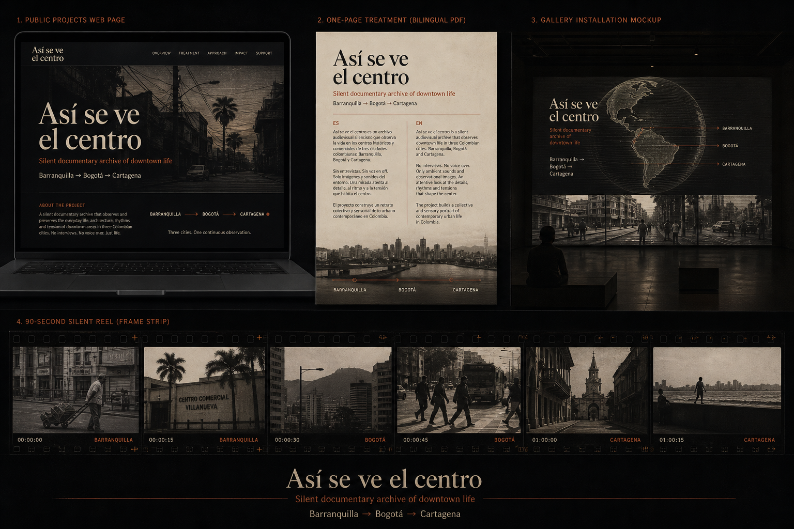

Barranquilla
Origin chapter. The existing footage proves method, rhythm, and point of view: heat, commerce, waiting, street motion, and port-city memory.
Proof pack / paquete de financiación
A silent documentary archive of downtown life, built city by city through fieldwork, interactive atlas chapters, and future installation screenings.
Un archivo documental silencioso de la vida en los centros urbanos, construido ciudad por ciudad.

Route logic
Origin chapter. The existing footage proves method, rhythm, and point of view: heat, commerce, waiting, street motion, and port-city memory.
Interior counterpoint. Altitude, bureaucracy, political center, dense pedestrian life, and a colder rhythm test the archive beyond the Caribbean.
Tourism image versus lived downtown. The route asks what public life looks like when global postcard memory meets daily local movement.
Installation destination
The website is proof, not the final form. Each trip produces one silent city chapter: footage, stills, route notes, and an atlas entry. The long-term object is a public archive that can live online, in a media lab, or as a projection room.
La obra no busca explicar la ciudad con entrevistas. La ciudad se interpreta a sí misma: luz, repetición, arquitectura, comercio, espera, calor, tránsito y vacío.
Reviewer packet
Title, logline, format, method, audience, why now.
Silent city method, downtown memory, personal origin.
Barranquilla, Bogotá, Cartagena as first fundable comparison.
Travel, production, web archive, installation mockup, applications.
90-sec reel language
Source docs
{kind=link}